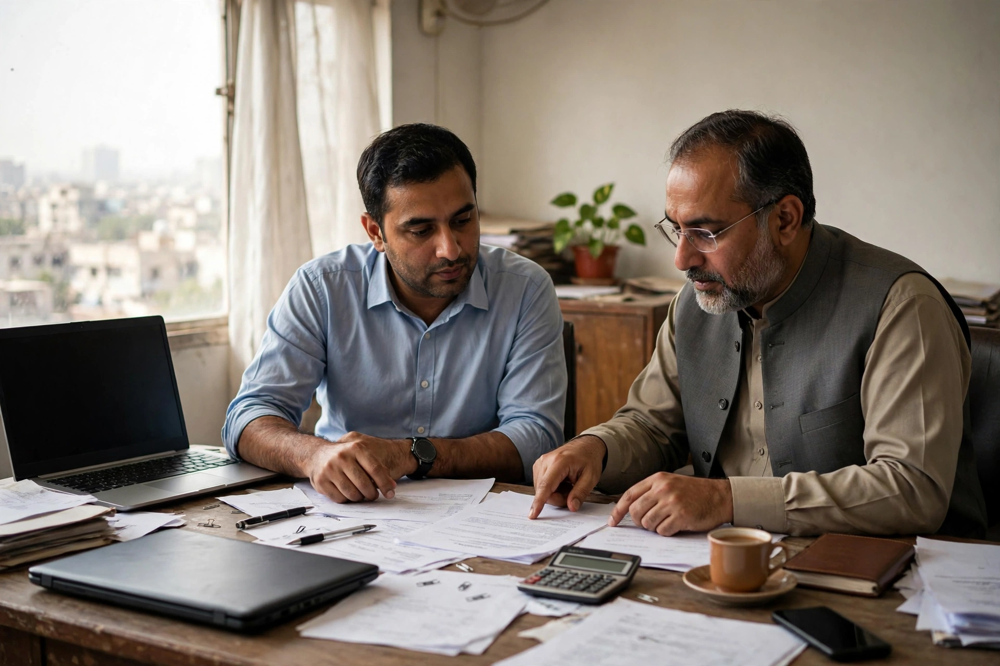
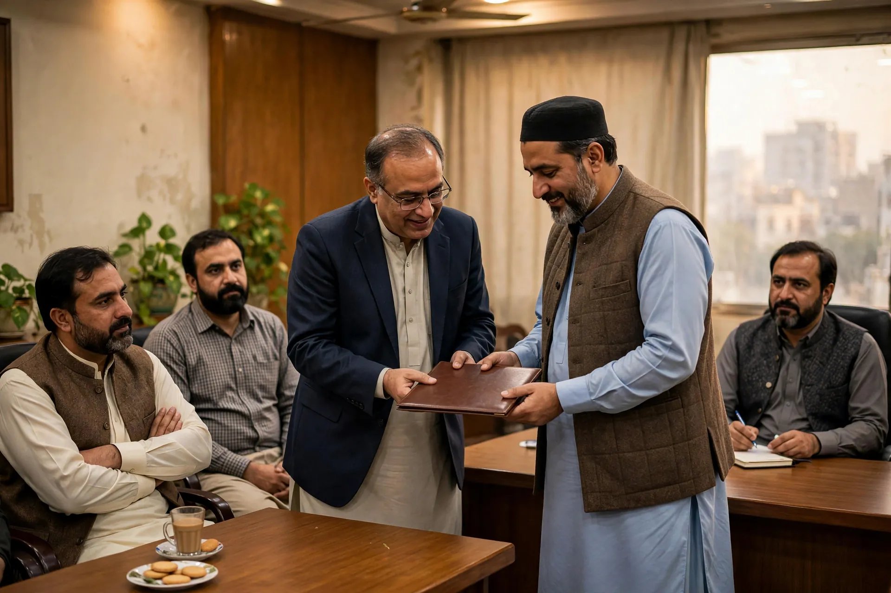
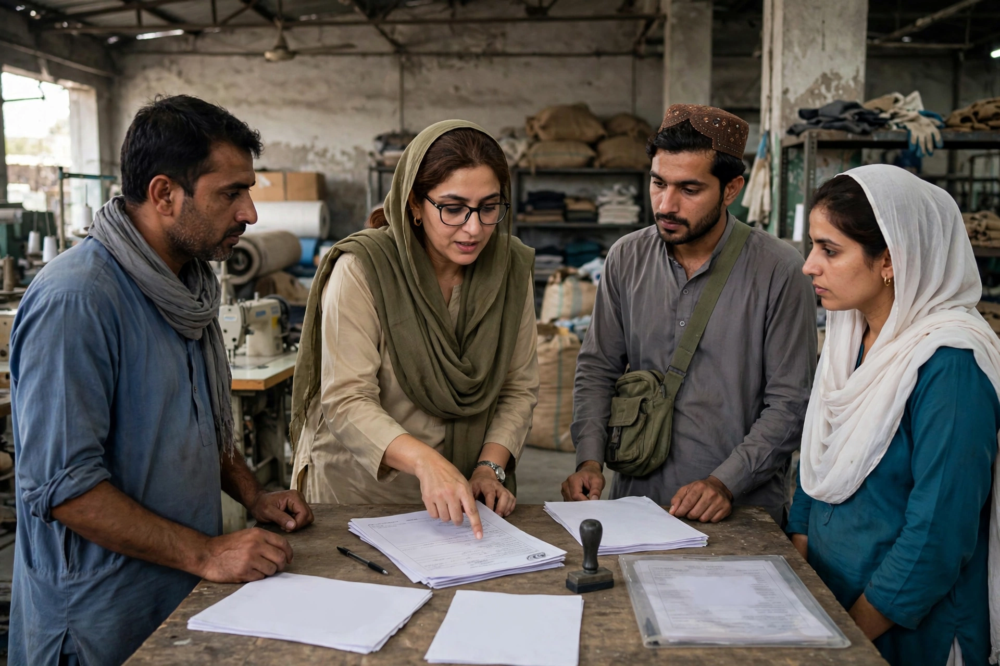
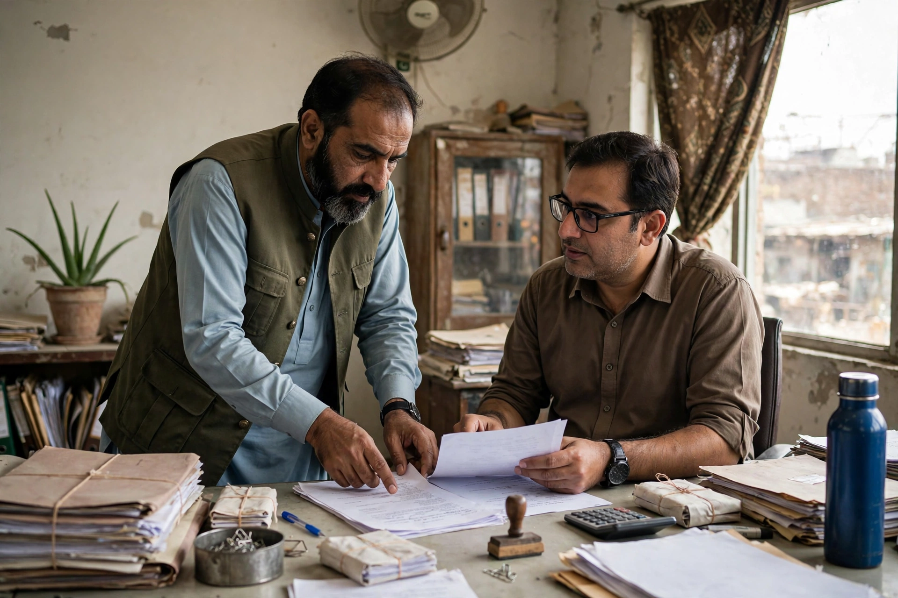
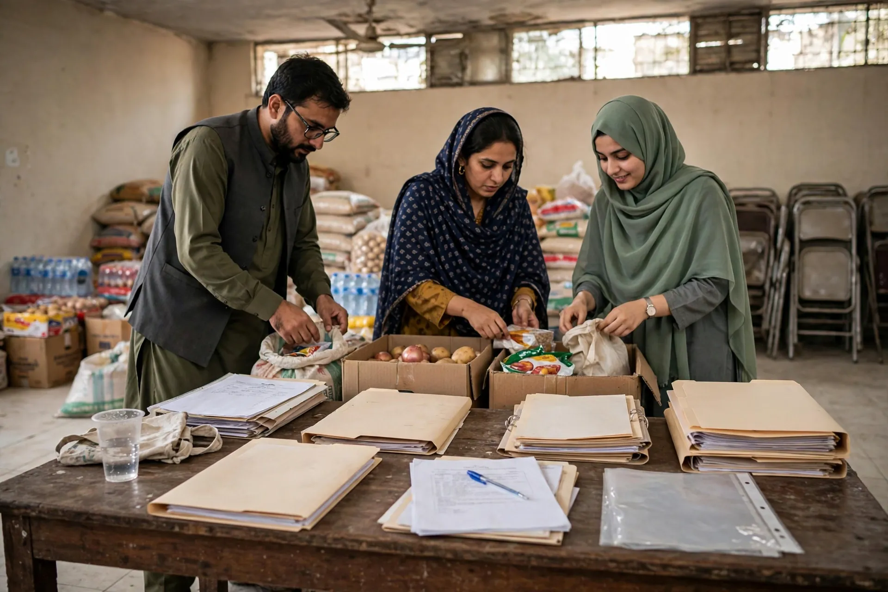

01 · FBR Iris
01 · FBR IrisNTN Registration
Individual, AOP ya company ke liye FBR e-enrollment aur NTN process.
Service page →
02 · FBRIncome Tax Return Filing
Iris par annual Income Tax Return filing aur registration access guidance.
Service page → 03 · FBR
03 · FBRSales Tax Registration
Importers, wholesalers, qualifying manufacturers aur Tier-1 retailers ke liye.
Service page → 04 · Sindh Revenue BoardSRB Sales Tax Registration
Sindh mein taxable services dene walon ke liye e-registration.
Service page → 05 · SECP
05 · SECPCompany Registration Pakistan (SECP)
Online company registration in Pakistan for a Single Member or Private Limited Company.
Service page → 06 · Registrar of Firms, Sindh
06 · Registrar of Firms, SindhPartnership Deed Registration in Pakistan
Sindh mein partnership deed aur Registrar of Firms registration process; LLP is a separate SECP route.
Service page →
07 · KCCIKCCI Chamber Membership
Karachi businesses ke liye Corporate ya Associate membership.
Service page → 08 · Sindh PolicePolice Character Certificate
Karachi residents ke liye online character verification certificate.
Service page →
09 · EOBIEOBI Registration
Private sector employers aur workers ke liye old-age benefits registration.
Service page →
10 · SESSISESSI Registration
Sindh establishments aur workers ke liye social security registration.
Service page → 11 · IPO Pakistan
11 · IPO PakistanTrademark Registration
Brand name, logo ya slogan ke exclusive rights ke liye.
Service page → 12 · Drafting Assistance
12 · Drafting AssistancePower of Attorney & Legal Agreements
Power of attorney Pakistan, affidavits, partnership deeds, employment and service agreements.
Service page → 13 · Documentation AssistanceProperty Documentation
Sale, gift, lease aur rent documents ki preparation aur review.
Service page → 14 · Industries Department, Sindh
14 · Industries Department, SindhNGO Registration Pakistan
Register an NGO in Pakistan through society registration, with Karachi-focused document guidance.
Service page → 15 · Directorate of Industries, Sindh
15 · Directorate of Industries, SindhTrust Registration
Sindh Trusts Act 2020 ke tehat registration aur annual renewal.
Service page →
16 · SECP Section 42NPO / Section 42 Company
Charitable aur not-for-profit company ki licensing aur incorporation.
Service page → 17 · Documentation Assistance
17 · Documentation AssistanceTenancy & Rent Agreement
Karachi aur Pakistan bhar ke residential ya commercial tenancy terms ki drafting assistance.
Service page → 18 · Family Documentation AssistanceDivorce Deed
Talaq notice aur divorce deed ki professional drafting assistance.
Service page → 19 · Non-Profit Registration Assistance
19 · Non-Profit Registration AssistanceFoundation Registration in Pakistan
Charitable organization registration through the suitable society, trust or Section 42 route.
Service page →koi bhi service ke liye inquiry karein
Pehli discussion WhatsApp ya call par: apna matter batayein, required documents ki list hasil karein.